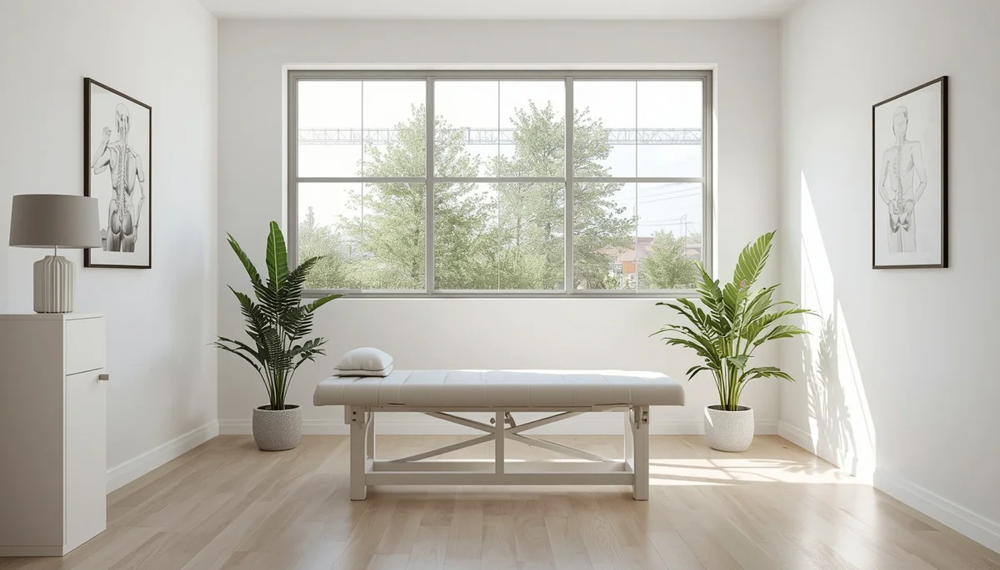

Cuándo consultar con especialistas en fisioterapia
Ante la aparición de molestias persistentes en la espalda, quejas recurrentes de dolor muscular, asimetrías evidentes en los hombros o la cadera al caminar, es fundamental contar con la valoración de profesionales especializados en fisioterapia pediátrica o traumatología infantil.
Señales de alerta que requieren atención clínica
El dolor localizado que interfiere con el juego, la rigidez matutina acusada o la curvatura anómala visible en la columna son indicadores claros de que la situación requiere un diagnóstico clínico profesional para descartar alteraciones estructurales y aplicar pautas correctoras a tiempo.
El valor de un diagnóstico precoz y respetuoso
Acudir a especialistas ante la mínima sospecha permite reconducir cualquier descompensación postural mediante ejercicios terapéuticos específicos, asegurando el bienestar musculoesquelético del menor durante su crecimiento.
"Consultar con profesionales sanitarios ante el dolor o la asimetría postural es una muestra de prevención y cuidado responsable."
Acompañar la salud de la espalda con rigor experto
Contar con el amparo clínico adecuado garantiza que cualquier dificultad en la alineación corporal sea tratada con la máxima seguridad y eficacia.
➔ Volver al índice de Higiene Postural